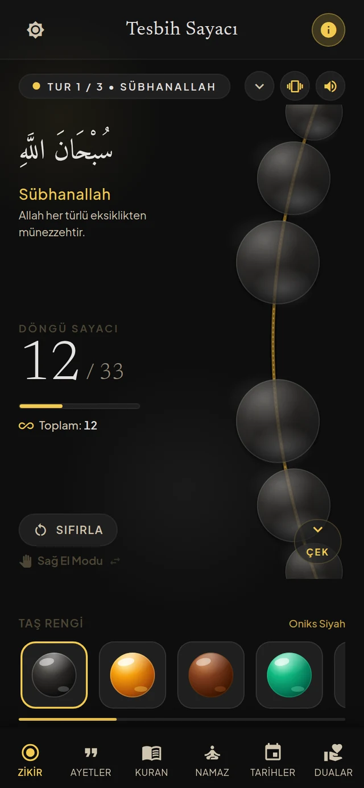
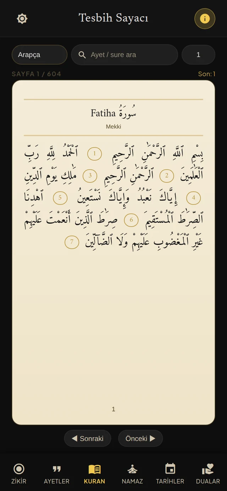
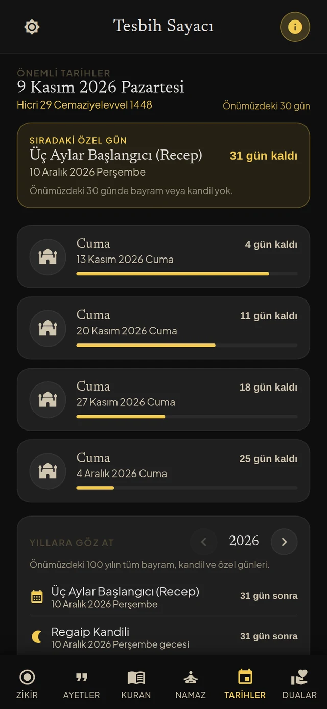

Zikir sayacı
33'lük döngü, dokunmatik titreşim ve sol / sağ el moduyla ritminizi bozmadan sayın. Sayı, tur ve toplam cihazınızda saklanır.
Sade Zikir; zikir ritminizi bozmadan sayan, önemli günleri hatırlatan ve duaları bir arada sunan sakin bir yol arkadaşı.

Bildirimler, reklamlar, hesaplar ve gereksiz menüler olmadan; yalnızca zikrinize odaklanmanız için tasarlandı.
33'lük döngü, dokunmatik titreşim ve sol / sağ el moduyla ritminizi bozmadan sayın. Sayı, tur ve toplam cihazınızda saklanır.
Kandil, bayram ve özel günleri takip edin. Etkinliklerden üç gün önce yalnızca cihazınızda planlanan yerel bildirimler alın.
İnternet olmadan çalışır. Hesap yok, reklam yok, analiz yok, veri toplama yok. Uygulama tamamen cihazınızda kalır. Tek bağlantı, yeni sürüm olup olmadığını denetleyen istektir; kişisel veri içermez.
Kur'an-ı Kerim, ayetler ve günlük dualar tek yerde. Sade bir okuma deneyimi, Arapça metin ve erişilebilir çeviriler.
Vakitler, kılınış adımları ve mezhep farklarıyla adım adım rehber. Aradığınız namaz türünü hızla bulun.
Arayüz ve içerikler 43 dilde. Dilediğiniz an dili değiştirin; uygulama seçtiğiniz dilde açılsın.
Karanlık tema, altın vurgular ve cam boncuklar; gözü yormayan bir okuma ve zikir deneyimi için bir araya geliyor.


Sade Zikir, dikkatinizi dağıtan hiçbir şey barındırmaz. Zikir sayınız ve tercihleriniz yalnızca cihazınızda kalır; hiçbir yere gönderilmez.
Sade Zikir çok yakında Android'de. Reklamsız, çevrimdışı, ücretsiz ve veri toplamayan bir zikir deneyimi.
Android · Ücretsiz · Reklamsız · İnternetsiz çalışır